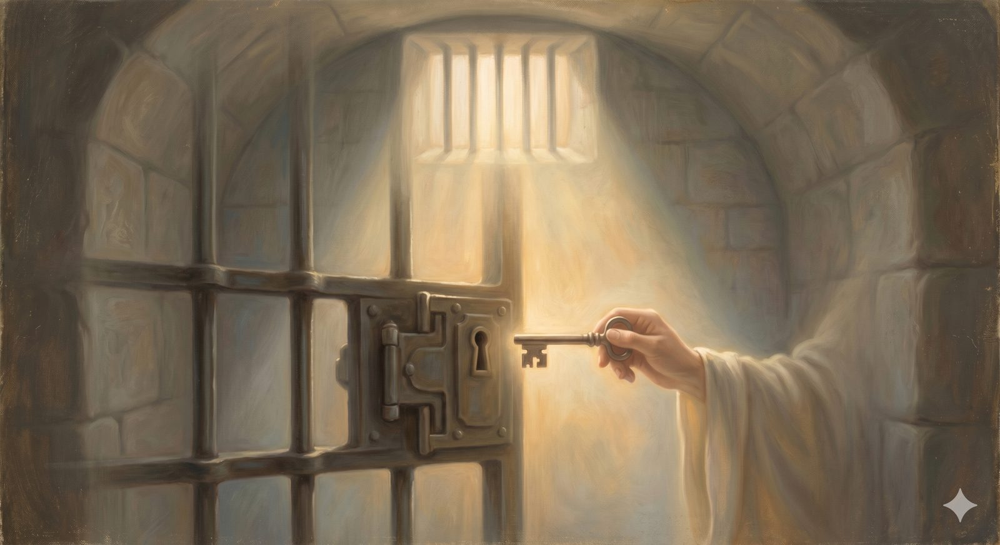

The Key of Promise
A 15-day study on prayer and the promises of God — the key Christian carried all along, turned in the lock of despair even while it was still night.
"...a key in my bosom, called Promise, that will open any lock in Doubting Castle." from The Pilgrim's Progress
It is the most famous turn in all of Bunyan: Christian and Hopeful, locked in the dungeon of Doubting Castle, beaten and starved by Giant Despair, all but resolved to die there — until Christian, half the night gone, startles upright and cries out that he has been a fool. I have a key in my bosom, called Promise, that will, I am persuaded, open any lock in Doubting Castle. They had carried the means of escape the whole time. The door that had held them was openable all along. This study is about that key.
For the key was not a feeling that the despair had lifted, and it was not a clever argument that talked the giant down. It was a promise — God's own word, remembered and trusted and turned in the lock while the cell was still dark. And here is the detail that makes all the difference: Christian used the key while it was still night, and while he still felt like a prisoner. The escape did not wait for his feelings to improve. That is the whole logic of these fifteen days. You do not generate the promise. You remember it, you pray it, and you let it — not your mood — do the work of the lock.
How these fifteen days work
Each day takes up one promise of God — a real word of Scripture, in the New Living Translation — and turns it over until you can see what it answers in the dark. Then comes the part that gives this study its shape: Pray the Promise. Each day ends not with a task to perform but with that day's promise prayed back to God — especially when it is not yet felt. This is the turning of the key. Take one day at a time, in order, or begin wherever the dark has found you.
Christian turned the key while it was still night, and while he still felt like a prisoner. The promise opens the lock — not the mood.
The fifteen promises, in six movements:
Where You Stand
Where He Meets You
What He Works in You
How You Are Kept
Begin with the promise underneath all the others: that God has bound himself to be your God.